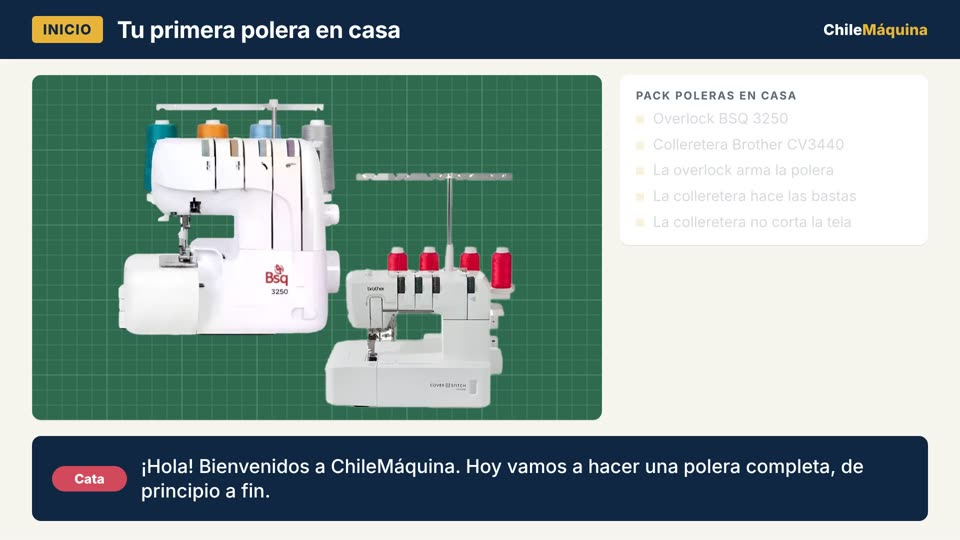

6:05
Descargar el PDF del tutorial
PDF con materiales, medidas y los 5 pasos, listo para imprimir.
Capítulos del video
Lo que necesitas
Materiales
- Tela negra liviana (satín o forro): ≈ 4 m de tela de 1 m de ancho para una capa de 90 cm de largo.
- Hilo de poliéster negro.
- Aguja universal n.º 80.
- Broche de presión de 25 mm.
- Botón decorativo (opcional).
Máquinas
- Máquina de coser doméstica
- Overlock (opcional)
Medidas
- Radio del cuello
- Contorno ÷ 6
35 ÷ 6 ≈ 6 cm - Largo
- Hombro → rodilla
90 cm - Radio de la basta
- 6 + 90 + 1
= 97 cm
Paso a paso
-
Paso 1: Corta la capa
Con la tela doblada derecho con derecho, traza arcos de 6 cm y 97 cm desde la esquina, usando la huincha como compás. Si la tela mide menos de 194 cm, corta dos medios círculos y únelos por el orillo con 1 cm de costura: esa unión será el centro de la espalda. Ver en el video (1:36)
-
Paso 2: Arma la capucha
Corta un rectángulo de 25 × 51 cm y redondea la esquina superior con la ayuda de un plato. Pon las 2 piezas derecho con derecho y cose la curva a 1 cm. Ver en el video (2:11)
-
Paso 3: Une la capucha
Calza centro con centro y pon los alfileres del centro hacia afuera. Cose a 1 cm: las costuras forman una cruz. Ver en el video (2:50)
-
Paso 4: Terminaciones
Termina los bordes con zigzag u overlock, o con doble doblez y costura recta. En telas livianas puedes usar el prensatelas dobladillador. Ver en el video (3:11)
-
Paso 5: Cierre
Cose a mano el broche de presión en la base de la capucha y pon el botón decorativo encima. Ver en el video (3:48)
Preguntas frecuentes
¿Cuánta tela necesito para una capa de Halloween?
Para una capa de 90 cm de largo, con tela de 1 m de ancho, calcula unos 4 m. Usa una tela negra liviana, como satín o tela de forro.
¿Cómo se calculan las medidas de una capa de círculo completo?
El radio del cuello es el contorno del cuello, sin apretar, dividido por 6 (por ejemplo, 35 ÷ 6 ≈ 6 cm). El radio de la basta es el radio del cuello más el largo más 1 cm de costura (por ejemplo, 6 + 90 + 1 = 97 cm).
¿Qué hago si mi tela es más angosta que la capa?
Si la tela mide menos del doble del radio de la basta (194 cm en el ejemplo), corta dos medios círculos y únelos por el orillo con 1 cm de costura. Esa costura queda en el centro de la espalda.
¿Necesito overlock para hacer la capa?
No. La capa se hace con una máquina de coser doméstica. Los bordes se pueden terminar con zigzag, con overlock o con doble doblez y costura recta; en telas livianas también sirve el prensatelas dobladillador.
Transcripción del video
Ver la transcripción completa
Capa de Halloween con capucha
Cata: ¡Hola! Bienvenidos a ChileMáquina. Se viene Halloween, y hoy hacemos la prenda más clásica de la noche: una capa con capucha.
Tomás: Sirve para bruja, vampiro o mago. Y la puedes hacer en una tarde, con tu máquina de coser doméstica.
Cata: Es una capa de círculo completo, con capucha, y la medida se adapta a niños o adultos.
Materiales
Cata: Necesitas tela negra liviana, por ejemplo satín o tela de forro, hilo de poliéster negro y una aguja universal n.º 80.
Tomás: Para una capa de 90 cm de largo, con tela de 1 m de ancho, calcula unos 4 m.
Cata: Y para cerrarla, un broche de presión de 25 mm. Si quieres, un botón decorativo.
Toma las medidas
Tomás: Primero, mide el contorno del cuello, sin apretar. Divide esa medida por 6, y tienes el radio del cuello.
Cata: Por ejemplo, 35 cm ÷ 6 da casi 6. Redondea a 6 cm.
Tomás: Después mide desde el hombro hasta donde quieres el largo. Por ejemplo, 90 cm, a la altura de la rodilla.
Cata: Suma el radio del cuello, el largo y 1 cm de costura: 6 + 90 + 1 = 97 cm. Ese es el radio de la basta.
Paso 1: Corta la capa
Cata: Paso 1: dobla la tela derecho con derecho y fíjala con alfileres.
Tomás: Desde la esquina, usa la huincha de medir como compás: marca un arco de 6 cm para el cuello y otro de 97 cm para la basta.
Cata: Si tu tela mide menos del doble de ese radio, en este caso 194 cm, corta dos medios círculos.
Tomás: Y únelos por el orillo, con 1 cm de costura. Esa costura queda en el centro de la espalda.
Paso 2: Arma la capucha
Tomás: Paso 2: la capucha. Mide la mitad del escote de la capa, desde la costura del centro, y suma 1 cm. En el ejemplo, 25 cm.
Cata: Luego mide desde el hombro hasta la parte de arriba de la cabeza, y suma 1 cm. Aquí, 51 cm.
Tomás: Dibuja un rectángulo de 25 × 51 cm, y redondea la esquina de arriba con un plato.
Cata: Corta dos piezas, derecho con derecho, y cóselas por la curva con 1 cm de costura.
Paso 3: Une la capucha
Cata: Paso 3: calza la costura de la capucha con la costura del centro de la capa, derecho con derecho.
Tomás: Pon alfileres desde el centro hacia afuera, y cose con 1 cm de costura.
Cata: Al levantar la capucha, las dos costuras forman una cruz. Así sabes que quedó centrada.
Paso 4: Terminaciones
Tomás: Paso 4: las orillas. Termina los bordes con zigzag o con overlock.
Cata: Otra opción es doblar dos veces y coser con puntada recta. Si usaste los orillos de la tela, solo te falta la basta y la abertura de la capucha.
Tomás: En telas livianas, como el satín, el prensatelas dobladillador te hace un dobladillo angosto y parejo, sin planchar.
Cata: Para empezar, dobla a mano los primeros centímetros, da unas puntadas, y luego guía el borde dentro del espiral.
Paso 5: Pon el cierre
Tomás: Paso 5: el cierre. Cose a mano un broche de presión en la base de la capucha.
Cata: Y encima, un botón decorativo que tape las puntadas. Queda como un prendedor.
¡Capa lista!
Tomás: ¡Y listo! Una capa con capucha para Halloween, hecha en casa.
Cata: Al final del video te mostramos cómo descargar gratis el PDF del tutorial, con las medidas y los pasos.
Tomás: Y si tienes dudas con tu máquina, escríbenos a ChileMáquina. ¡Feliz Halloween!
Productos relacionados
Fuentes
- Cucicucicoo, "How to make a hooded cape for a child or adult" (2021): radio del cuello = contorno ÷ 6, radio de la basta, capucha de 25 × 51 cm, cruz de costuras, broche de presión, terminaciones, 4 m de tela de 1 m de ancho.
- WeAllSew (BERNINA), "How to make a hooded cape for Halloween": capucha forrada y terminación con dobladillo enrollado.
- Ficha del prensatelas dobladillador enrollado, chilemaquina.pro (uso en telas livianas y medianas, cómo empezar el dobladillo).
Más tutoriales
¿Dudas con tu capa o con tu máquina?
Escríbenos por WhatsApp al +56 9 4549 4865 y te ayudamos.